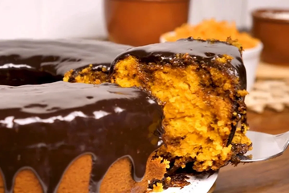

| Nome | Imagem | Descricao | link |
|---|
| Bolo de cenoura |  | O bolo de cenoura é um bolo doce com cenoura misturada dentro da massa. Existem dois estilos distintos de bolos de cenoura, o primeiro onde a cenoura é ralada crua e adicionada a massa do bolo, ao cozer o bolo no forno a cenoura cozinha e fica tenra, criando um bolo denso e suave mas com um toque de frescura. | Bolo de cenoura |
| Bolo de limão |  | O bolo de limão é um bolo doce e aromático, feito com suco e raspas de limão misturados à massa. Sua textura é macia e levemente úmida, com um sabor cítrico refrescante que equilibra perfeitamente o doce do bolo. Pode ser servido simples, polvilhado com açúcar de confeiteiro ou coberto com uma calda de limão, que intensifica o sabor e deixa a superfície brilhante e delicadamente crocante. É uma ótima opção para quem gosta de sobremesas leves e com um toque de acidez. | Bolo de limão |
| Bolo de fubá |  | O bolo de fubá é um bolo tradicional e simples, preparado com fubá de milho que dá à massa uma textura levemente granulada e um sabor característico. É macio, levemente úmido e pode ser servido puro ou acompanhado de goiabada, queijo ou coco ralado, tornando-o ainda mais saboroso. Seu aroma lembra receitas caseiras e é perfeito para acompanhar um café ou chá da tarde, trazendo aquele toque de nostalgia e aconchego típico das receitas de família. | Bolo de fubá |
| Bolo formigueiro |  | O bolo formigueiro é um bolo fofo e divertido, feito com massa branca ou de baunilha misturada com granulado de chocolate, que se espalha durante o cozimento e cria pequenos pontos escuros pelo bolo, lembrando formiguinhas — daí o nome. Sua textura é leve e macia, e o sabor combina o doce delicado da massa com o toque do chocolate. Pode ser servido simples ou coberto com uma calda de chocolate, tornando-o ainda mais irresistível para lanches e festas. | Bolo formigueiro |
| Bolo de Coco |  | O bolo de coco é um bolo macio e aromático, preparado com coco ralado misturado à massa, o que garante uma textura úmida e um sabor tropical característico. Pode ser servido simples, com cobertura de leite condensado e mais coco ralado por cima ou até na versão gelada, que fica ainda mais molhadinha e refrescante. É uma escolha clássica para festas e cafés da tarde, agradando quem gosta de sobremesas delicadas e com um toque de doçura natural. | Bolo de coco |
Bolo de morango com cobertura de chantilly |  |